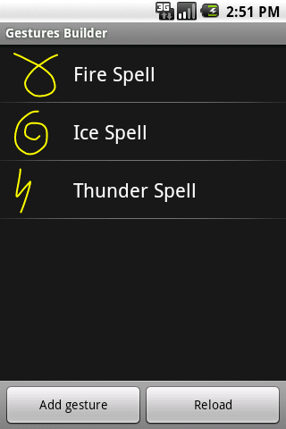
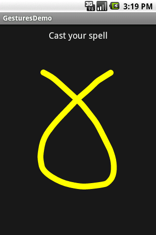
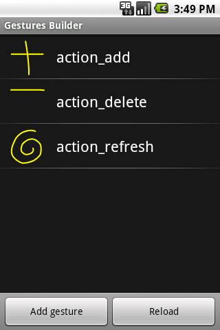
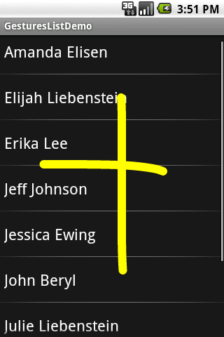
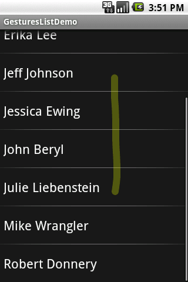

Touch screens are a great way to interact with applications on mobile devices. With a touch screen, users can easily tap, drag, fling, or slide to quickly perform actions in their favorite applications. For app developers. the Android framework makes it's easy to recognize simple actions, like a swipe, but it has been more difficult to handle complicated gestures, sometimes requiring developers to write a lot of code.
That's why we introduced a new gestures API in Android 1.6. This API, located
in the new package android.gesture, lets you store, load, draw, and
recognize gestures. This article will show you how you can use the
android.gesture API in your applications. Before going any further,
you should download the source code
of the examples.
Android 1.6 and higher SDK platforms include a new application pre-installed on the emulator, called Gestures Builder. You can use this application to create a set of pre-defined gestures for your own application. It also serves as an example of how to let the user define his own gestures in your applications. You can find the source code of Gestures Builders in the samples directory of each SDK platform. In our example we will use Gestures Builder to generate a set of gestures for us (make sure to create an AVD with an SD card image to use Gestures Builder.) The screenshot below shows what the application looks like after adding a few gestures:
As you can see, a gesture is always associated with a name. That name is very
important because it identifies each gesture within your application. The names
do not have to be unique. Actually it can be very useful to have several
gestures with the same name to increase the precision of the recognition. Every
time you add or edit a gesture in the Gestures Builder, a file is generated on
the emulator's SD card, /sdcard/gestures. This file contains the
description of all the gestures, and you will need to package it inside your
application inside the resources directory, in
/res/raw.
Now that you have a set of pre-defined gestures, you must load it inside your
application. This can be achieved in several ways but the easiest is to use the
GestureLibraries class:
mLibrary = GestureLibraries.fromRawResource(this, R.raw.spells);
if (!mLibrary.load()) {
finish();
}
In this example, the gesture library is loaded from the file
/res/raw/spells. You can easily load libraries from other sources,
like the SD card, which is very important if you want your application to be
able to save the library; a library loaded from a raw resource is read-only and
cannot be modified. The following diagram shows the structure of a library:
To start recognizing gestures in your application, all you have to do
is add a GestureOverlayView to your XML layout:
<android.gesture.GestureOverlayView
android:id="@+id/gestures"
android:layout_width="fill_parent"
android:layout_height="0dip"
android:layout_weight="1.0" />
Notice that the GestureOverlayView
is not part of the usual android.widget package. Therefore, you must
use its fully qualified name. A gesture overlay acts as a simple
drawing board on which the user can draw his gestures. You can tweak
several visual properties, like the color and the width of the stroke
used to draw gestures, and register various listeners to follow what
the user is doing. The most commonly used listener is
GestureOverlayView.OnGesturePerformedListener,
which fires whenever a user is done drawing a gesture:
GestureOverlayView gestures = (GestureOverlayView) findViewById(R.id.gestures); gestures.addOnGesturePerformedListener(this);
When the listener fires, you can ask the GestureLibrary
to try to recognize the gesture. In return, you will get a list of
Prediction instances, each with a name - the same name you entered in
the Gestures Builder - and a score. The list is sorted by descending
scores; the higher the score, the more likely the associated gesture is
the one the user intended to draw. The following code snippet
demonstrates how to retrieve the name of the first prediction:
public void onGesturePerformed(GestureOverlayView overlay, Gesture gesture) {
ArrayList<prediction> predictions = mLibrary.recognize(gesture);
// We want at least one prediction
if (predictions.size() > 0) {
Prediction prediction = predictions.get(0);
// We want at least some confidence in the result
if (prediction.score > 1.0) {
// Show the spell
Toast.makeText(this, prediction.name, Toast.LENGTH_SHORT).show();
}
}
}
In this example, the first prediction is taken into account only if it's score is greater than 1.0. The threshold you use is entirely up to you but know that scores lower than 1.0 are typically poor matches. And this is all the code you need to create a simple application that can recognize pre-defined gestures (see the source code of the project GesturesDemo):
In the example above, the GestureOverlayView was used
as a normal view, embedded inside a LinearLayout.
However, as its name suggests, it can also be used as an overlay on top
of other views. This can be useful to recognize gestures in a game or
just anywhere in the UI of an application. In the second example,
called GesturesListDemo, we'll create an overlay on top of a list of
contacts. We start again in Gestures Builder to create a new set of
pre-defined gestures:

And here is what the XML layout looks like:
<android.gesture.GestureOverlayView
xmlns:android="http://schemas.android.com/apk/res/android"
android:id="@+id/gestures"
android:layout_width="fill_parent"
android:layout_height="fill_parent"
android:gestureStrokeType="multiple"
android:eventsInterceptionEnabled="true"
android:orientation="vertical">
<ListView
android:id="@android:id/list"
android:layout_width="fill_parent"
android:layout_height="fill_parent" />
</android.gesture.GestureOverlayView>
In this application, the gestures view is an overlay on top of a regular ListView. The overlay also specifies a few properties that we did not need before:
gestureStrokeType: indicates
whether we want to recognize gestures made of a single stroke or
multiple strokes. Since one of our gestures is the "+" symbol, we need
multiple strokeseventsInterceptionEnabled: when
set to true, this property tells the overlay to steal the events from
its children as soon as it knows the user is really drawing a gesture.
This is useful when there's a scrollable view under the overlay, to
avoid scrolling the underlying child as the user draws his gesture orientation:
indicates the scroll orientation of the views underneath. In this case
the list scrolls vertically, which means that any horizontal gestures
(like action_delete) can immediately be recognized as a
gesture. Gestures that start with a vertical stroke must contain at
least one horizontal component to be recognized. In other words, a
simple vertical line cannot be recognized as a gesture since it would
conflict with the list's scrolling.The code used to load and set up the gestures library and overlay is exactly the same as before. The only difference is that we now check the name of the predictions to know what the user intended to do:
public void onGesturePerformed(GestureOverlayView overlay, Gesture gesture) {
ArrayList<Prediction> predictions = mLibrary.recognize(gesture);
if (predictions.size() > 0 && predictions.get(0).score > 1.0) {
String action = predictions.get(0).name;
if ("action_add".equals(action)) {
Toast.makeText(this, "Adding a contact", Toast.LENGTH_SHORT).show();
} else if ("action_delete".equals(action)) {
Toast.makeText(this, "Removing a contact", Toast.LENGTH_SHORT).show();
} else if ("action_refresh".equals(action)) {
Toast.makeText(this, "Reloading contacts", Toast.LENGTH_SHORT).show();
}
}
}
The user is now able to draw his gestures on top of the list without interfering with the scrolling:
The overlay even gives visual clues as to whether the gesture is considered valid for recognition. In the case of a vertical overlay, for instance, a single vertical stroke cannot be recognized as a gesture and is therefore drawn with a translucent color:
Adding support for gestures in your application is easy and can be a valuable addition. The gestures API does not even have to be used to recognize complex shapes; it will work equally well to recognize simple swipes. We are very excited by the possibilities the gestures API offers, and we're eager to see what cool applications the community will create with it.